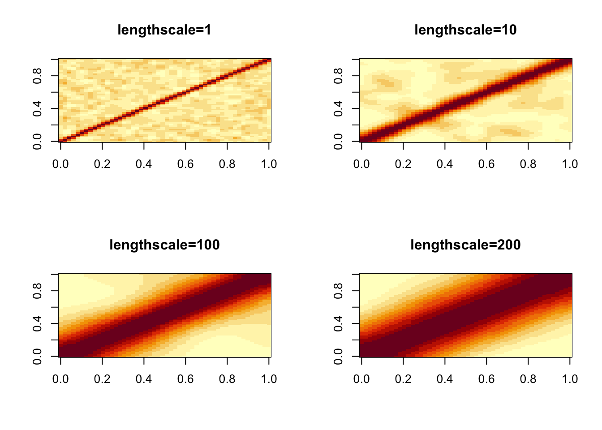
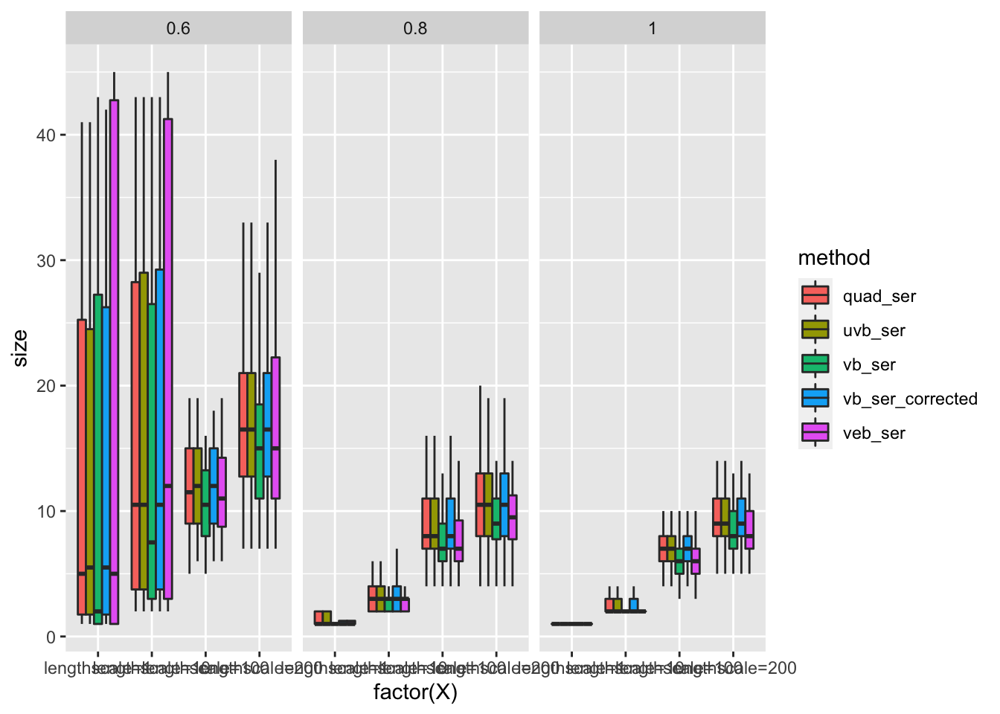
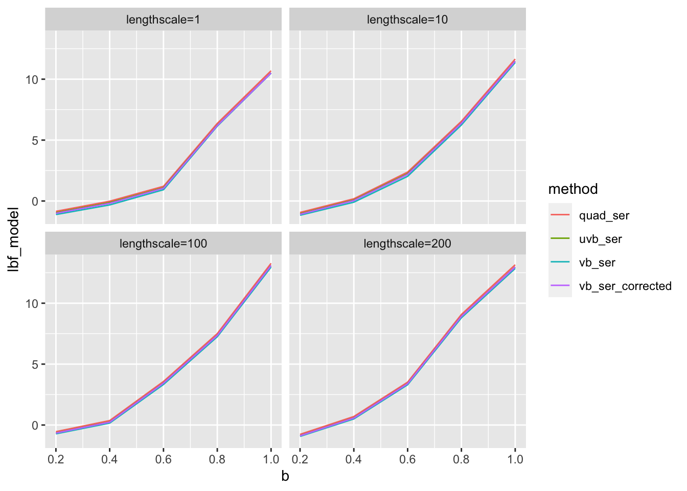
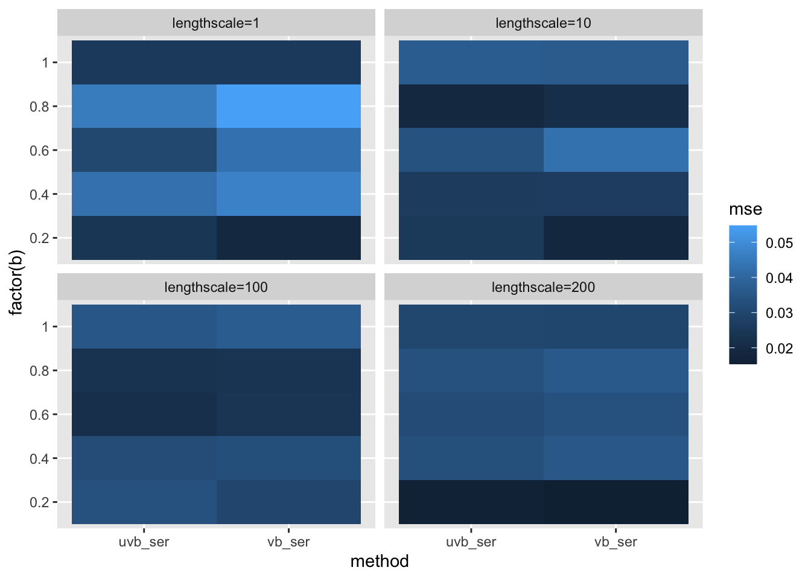

Last updated: 2022-11-15
Checks: 7 0
Knit directory: logistic-susie-gsea/
This reproducible R Markdown analysis was created with workflowr (version 1.7.0). The Checks tab describes the reproducibility checks that were applied when the results were created. The Past versions tab lists the development history.
Great! Since the R Markdown file has been committed to the Git repository, you know the exact version of the code that produced these results.
Great job! The global environment was empty. Objects defined in the global environment can affect the analysis in your R Markdown file in unknown ways. For reproduciblity it’s best to always run the code in an empty environment.
The command set.seed(20220105) was run prior to running
the code in the R Markdown file. Setting a seed ensures that any results
that rely on randomness, e.g. subsampling or permutations, are
reproducible.
Great job! Recording the operating system, R version, and package versions is critical for reproducibility.
Nice! There were no cached chunks for this analysis, so you can be confident that you successfully produced the results during this run.
Great job! Using relative paths to the files within your workflowr project makes it easier to run your code on other machines.
Great! You are using Git for version control. Tracking code development and connecting the code version to the results is critical for reproducibility.
The results in this page were generated with repository version 5b89a57. See the Past versions tab to see a history of the changes made to the R Markdown and HTML files.
Note that you need to be careful to ensure that all relevant files for
the analysis have been committed to Git prior to generating the results
(you can use wflow_publish or
wflow_git_commit). workflowr only checks the R Markdown
file, but you know if there are other scripts or data files that it
depends on. Below is the status of the Git repository when the results
were generated:
Ignored files:
Ignored: .DS_Store
Ignored: .RData
Ignored: .Rhistory
Ignored: .Rproj.user/
Ignored: _targets.R
Ignored: _targets.html
Ignored: _targets.md
Ignored: _targets/objects/
Ignored: _targets/test/
Ignored: _targets/user/
Ignored: _targets/workspaces/
Ignored: cache/
Ignored: data/.DS_Store
Ignored: data/adipose_2yr_topsnp.txt
Ignored: data/anthony/
Ignored: data/bohan_example/
Ignored: data/de-droplet/
Ignored: data/de-microplastics/
Ignored: data/deng/
Ignored: data/fetal_reference_cellid_gene_sets.RData
Ignored: data/human_chimp_eb/
Ignored: data/pbmc-purified/
Ignored: data/wenhe_baboon_diet/
Ignored: data/yusha_sc_tumor/
Ignored: library/
Untracked files:
Untracked: .ipynb_checkpoints/
Untracked: Master's Paper.pdf
Untracked: R/
Untracked: VEB_Boost_Proposal_Write_Up (1).pdf
Untracked: _targets/meta/
Untracked: additive.l5.gonr.aggregate.scores
Untracked: analysis/2022_09_22_pdac_example.Rmd
Untracked: analysis/alpha_ash_v_point_normal.Rmd
Untracked: analysis/bohan_troubleshoot.Rmd
Untracked: analysis/compare_w_post_hoc_clustering.Rmd
Untracked: analysis/compute_exact_BFs.Rmd
Untracked: analysis/constrained_q_alpha_update.Rmd
Untracked: analysis/de_droplet_noshrink.Rmd
Untracked: analysis/de_droplet_noshrink_logistic_susie.Rmd
Untracked: analysis/detection_problem.Rmd
Untracked: analysis/exact_logistic_ser.Rmd
Untracked: analysis/expected_condition_bfs.Rmd
Untracked: analysis/fetal_reference_cellid_gsea.Rmd
Untracked: analysis/fixed_intercept.Rmd
Untracked: analysis/gsea_made_simple.Rmd
Untracked: analysis/iDEA_examples.Rmd
Untracked: analysis/latent_gene_list.Rmd
Untracked: analysis/linear_method_failure_modes.Rmd
Untracked: analysis/linear_regression_failure_regime.Rmd
Untracked: analysis/linear_v_logistic_pbmc.Rmd
Untracked: analysis/logistic_susie_rss.Rmd
Untracked: analysis/logistic_susie_veb_boost_vs_vb.Rmd
Untracked: analysis/logistic_susie_vis.Rmd
Untracked: analysis/logistic_variational_bound.Rmd
Untracked: analysis/logsitic_susie_template.Rmd
Untracked: analysis/normal_means.Rmd
Untracked: analysis/pcb_scratch.Rmd
Untracked: analysis/references.bib
Untracked: analysis/roadmap.Rmd
Untracked: analysis/sc_tumor_followup.Rmd
Untracked: analysis/ser_detection_threshold.Rmd
Untracked: analysis/simulations.Rmd
Untracked: analysis/simulations_l1.Rmd
Untracked: analysis/tccm_vs_logistic_susie.Rmd
Untracked: analysis/template.Rmd
Untracked: analysis/test.Rmd
Untracked: analysis/univariate_laplace_approximation.Rmd
Untracked: analysis/vb_ser_susie.Rmd
Untracked: analysis/vb_susie.Rmd
Untracked: analysis/z_score_vs_threshold.Rmd
Untracked: build_site.R
Untracked: code/binromial_ser.R
Untracked: code/html_tables.R
Untracked: code/latent_logistic_susie.R
Untracked: code/logistic_susie_data_driver.R
Untracked: code/marginal_sumstat_gsea_collapsed.R
Untracked: code/point_normal.R
Untracked: code/sumstat_gsea.py
Untracked: code/susie_gsea_queries.R
Untracked: docs.zip
Untracked: export/
Untracked: figure/
Untracked: l1.sim.aggregate.scores
Untracked: pbmc_cd19_symbol.txt
Untracked: pbmc_cd19b_0.1_background.csv
Untracked: pbmc_cd19b_0.1_david_annotation_clusters.txt
Untracked: pbmc_cd19b_0.1_david_results.txt
Untracked: pbmc_cd19b_0.1_list.csv
Untracked: pipelines/
Untracked: presentations/
Untracked: references.bib
Untracked: run.R
Untracked: run.sh
Unstaged changes:
Modified: _targets.Rmd
Modified: _targets.yaml
Modified: analysis/approximate_bayes_factors.Rmd
Modified: analysis/example_pbmc.Rmd
Modified: analysis/logistic_ser_undercovers.Rmd
Modified: analysis/logistic_susie_initialization.Rmd
Note that any generated files, e.g. HTML, png, CSS, etc., are not included in this status report because it is ok for generated content to have uncommitted changes.
These are the previous versions of the repository in which changes were
made to the R Markdown (analysis/compare_sers.Rmd) and HTML
(docs/compare_sers.html) files. If you’ve configured a
remote Git repository (see ?wflow_git_remote), click on the
hyperlinks in the table below to view the files as they were in that
past version.
| File | Version | Author | Date | Message |
|---|---|---|---|---|
| Rmd | 5b89a57 | Karl Tayeb | 2022-11-15 | wflow_publish("analysis/compare_sers.Rmd") |
We have been thinking about different ways to do the logistic Single Effect Regression. This is an important building block of SuSiE. While it is not so hard to perform the logistic SER exactly (which amounts to computing the posterior distribution for \(p\) univariate Bayesian logistic regressions, possibly estimation of the prior variance) we want a fast and accurate approximation that can be run iteratively in SuSiE.
In the logisticsusie package we have prototyped a few
logistic SERs:
VB-SER: this is the “VB Single Effect Regression”. This is the
SER that the entire logistic SuSiE package was originally built around.
To conform to the output format of the prototyped SERs we
fit_bin_ser(X, y, ...)
VB-SER Corrected: this is the “Corrected VB Single Effect
Regression”. We fit the VB-SER, but to estimate the PIPs, we compute the
BFs using the optimal setting of \(q(\omega)\) for each column of
X seperately. The resulting BFs are often close to those
achieved in UVB-SER, but is much cheaper to compute. The quality of this
approximation, of course, depends on how close the approximate
conditional effect posterior of the VB approximation is to the posterior
effect in the corresponding UVB \(D_{KL}(q_{VB}(b | \phi = j) || q_{j,
UVB}(b))\). To conform to the output format of the prototyped
SERs we fit_bin_ser_corrected(X, y, ...)
UVB-SER: this is the “Univariate VB Single Effect Regression”
which can be fit with fit_uvb_ser(X, y, ...). We use the
Jaakola-Jordan/Polya-Gamma variational approximation to fit a univariate
regression for each column of X. In practice we find that
the BFs from this approximation are close to the exact BFs computed via
quadrature.
GLM-SER: performs a call to glm for each column of
X and uses Wakefields ABFs to compute Bayes factors, and
approximates the posterior distribution of each effect with the implied
posterior distributions. fit_glm_ser(X, y, ....)
Exact-SER: We can compute the exact BFs via quadrature. We should
also be able to get good estimates of the posterior moments via a simple
MCMC scheme (greta seems promising for this?).
fit_quad_ser(X, y, ...)
Through a range of simulations we will aim to answer the questions:
We will simulate design matrix X in two ways
X with varying proportion of \(1\)s and overlap between features
(pending)X with varying correlation structureWe will vary the sample size \(n\) and the number of covariates \(p\)
In the extreme, when there is no overlap/correlation we should hope to make a comparison with multiple testing procedures that assume independence. In particular I’m interested in the comparison to \(\text{1-FWER}\) control procedures. We can also make a comparison with other variable selection techniques which are designed to achieve good predictive performance, but not necessarily accurately quantify uncertainty.
As the correlation/overlap increases we can evaluate the ability of each of the SERs to accurately quantify uncertainty in which variable is selected.
The binary response y will be controlled by two
parameters: (1) a fixed intercept which gives a “background” rate when
you marginalize over \(X\) (we’ll
assume the columns of \(X\) are mean
centered). (2) the effect of the causal feature
# R/sim_sers.R
library(tidyverse)
devtools::load_all('~/R/logisticsusie/')
simulate_y <- function(X, b0, b, idx=NULL){
X <- scale(X)
p <- ncol(X)
# select a random index if not provied
if(is.null(idx)){
idx <- sample(1:p, 1)
}
logits <- b0 + X[, idx] * b
y <- rbinom(length(logits), 1, sigmoid(logits))
return(list(y=y, logits=logits, b0=b0, b=b, idx=idx))
}
# simulate X
X <- logisticsusie:::sim_X(n=200, p=50)
X <- scale(X)
# simulate y
b0 <- c(-4, -2, -1, -0.5, 0)
b <- c(0.1, 0.2, 0.5, 1, 2, 4)
b <- sort(c(-b, b))
reps <- 1:10
sim <- tidyr::crossing(b0, b, rep=reps) %>%
rowwise() %>%
mutate(
sim = list(simulate_y(X, b0, b))
)
# fit SERs
fit <- sim %>%
rowwise() %>%
mutate(
vb_ser = list(fit_bin_ser(X, sim$y, prior_variance=1)),
vb_ser_corrected = list(fit_bin_ser_corrected(X, sim$y, prior_variance=1)),
uvb_ser = list(fit_uvb_ser(X, sim$y, prior_variance = 1)),
veb_ser = list(fit_veb_ser(X, sim$y, prior_variance = 1)),
quad_ser = list(fit_quad_ser(X, sim$y, prior_variance = 1))
)library(tidyverse)── Attaching packages ─────────────────────────────────────── tidyverse 1.3.1 ──✔ ggplot2 3.3.6 ✔ purrr 0.3.4
✔ tibble 3.1.8 ✔ dplyr 1.0.10
✔ tidyr 1.2.1 ✔ stringr 1.4.0
✔ readr 2.1.2 ✔ forcats 0.5.2 ── Conflicts ────────────────────────────────────────── tidyverse_conflicts() ──
✖ dplyr::filter() masks stats::filter()
✖ dplyr::lag() masks stats::lag()library(kableExtra)
Attaching package: 'kableExtra'The following object is masked from 'package:dplyr':
group_rowslibrary(targets)
devtools::load_all('~/R/logisticsusie')ℹ Loading logisticsusietar_load('Xs_dense', store = '_targets/test')
tar_load('fits_dense_quad_ser', store = '_targets/test')
tar_load('fits_dense_vb_ser', store = '_targets/test')
tar_load('fits_dense_veb_ser', store = '_targets/test')
tar_load('fits_dense_uvb_ser', store = '_targets/test')
tar_load('fits_dense_vb_ser_corrected', store = '_targets/test')
fits <- dplyr::bind_rows(
fits_dense_quad_ser,
fits_dense_vb_ser,
fits_dense_veb_ser,
fits_dense_uvb_ser,
fits_dense_vb_ser_corrected
)We simulate 4 sets of features with varying degree of correlation structure. There are \(p=50\) features and \(n=200\) observations.
par(mfrow=c(2,2))
for(i in 1:length(Xs_dense)){
Xs_dense[[i]] %>% cor() %>% image(., main=names(Xs_dense)[i])
}
We look at the 90% credible sets. We see that as the features become
more correlated, the undercoverage issue becomes more apparent for
vb_ser. Note that veb_ser performs a bit
better– this is the only method that is not using a fixed prior effect
variance. We see that the vb_ser_corrected gets similar
results to quad_ser and uvb_ser. It also only
tends to widen the credible set by a little bit– so we are not paying
such a high price for the correction in these simulations.
score_cs <- function(fit, sim){
cs <- get_cs(fit$alpha, requested_coverage = 0.9)
cs$covered <- sim$idx %in% cs$cs
return(cs)
}
cs_res <- fits %>%
rowwise() %>%
mutate(cs = list(score_cs(fit, sim))) %>%
unnest_wider(cs)
cs_res %>%
group_by(method, X) %>%
summarise(coverage = mean(covered)) %>%
pivot_wider(names_from = method, values_from=coverage) %>%
kbl() %>% kable_styling()`summarise()` has grouped output by 'method'. You can override using the
`.groups` argument.| X | quad_ser | uvb_ser | vb_ser | vb_ser_corrected | veb_ser |
|---|---|---|---|---|---|
| lengthscale=1 | 0.985 | 0.985 | 0.970 | 0.985 | 0.995 |
| lengthscale=10 | 0.945 | 0.945 | 0.925 | 0.945 | 0.945 |
| lengthscale=100 | 0.920 | 0.920 | 0.885 | 0.920 | 0.915 |
| lengthscale=200 | 0.905 | 0.905 | 0.865 | 0.905 | 0.890 |
# cs size
cs_res %>%
group_by(method, b, X) %>%
summarise(cs_size = median(size)) %>%
pivot_wider(names_from = method, values_from=cs_size) %>%
kbl() %>% kable_styling()`summarise()` has grouped output by 'method', 'b'. You can override using the
`.groups` argument.| b | X | quad_ser | uvb_ser | vb_ser | vb_ser_corrected | veb_ser |
|---|---|---|---|---|---|---|
| 0.2 | lengthscale=1 | 40.0 | 40.0 | 40.5 | 40.0 | 45.0 |
| 0.2 | lengthscale=10 | 41.0 | 41.0 | 42.0 | 41.0 | 45.0 |
| 0.2 | lengthscale=100 | 39.0 | 39.0 | 39.5 | 39.0 | 44.0 |
| 0.2 | lengthscale=200 | 41.5 | 41.5 | 41.5 | 41.5 | 45.0 |
| 0.4 | lengthscale=1 | 36.5 | 36.5 | 38.0 | 38.0 | 45.0 |
| 0.4 | lengthscale=10 | 30.5 | 30.5 | 31.5 | 31.5 | 41.5 |
| 0.4 | lengthscale=100 | 29.5 | 30.0 | 26.5 | 29.5 | 36.5 |
| 0.4 | lengthscale=200 | 25.5 | 25.0 | 24.0 | 25.0 | 29.0 |
| 0.6 | lengthscale=1 | 5.0 | 5.5 | 2.0 | 5.5 | 5.0 |
| 0.6 | lengthscale=10 | 10.5 | 10.5 | 7.5 | 10.5 | 12.0 |
| 0.6 | lengthscale=100 | 11.5 | 12.0 | 10.5 | 12.0 | 11.0 |
| 0.6 | lengthscale=200 | 16.5 | 16.5 | 15.0 | 16.5 | 15.0 |
| 0.8 | lengthscale=1 | 1.0 | 1.0 | 1.0 | 1.0 | 1.0 |
| 0.8 | lengthscale=10 | 3.0 | 3.0 | 3.0 | 3.0 | 3.0 |
| 0.8 | lengthscale=100 | 8.0 | 8.0 | 7.0 | 8.0 | 7.0 |
| 0.8 | lengthscale=200 | 10.5 | 10.5 | 9.0 | 10.5 | 9.5 |
| 1.0 | lengthscale=1 | 1.0 | 1.0 | 1.0 | 1.0 | 1.0 |
| 1.0 | lengthscale=10 | 2.0 | 2.0 | 2.0 | 2.0 | 2.0 |
| 1.0 | lengthscale=100 | 7.0 | 7.0 | 6.0 | 7.0 | 6.0 |
| 1.0 | lengthscale=200 | 9.0 | 9.0 | 8.0 | 9.0 | 8.0 |
# cs size
cs_res %>%
group_by(method, b, X) %>%
filter(b > 0.5) %>%
ggplot(aes(x=factor(X), y= size, fill=method)) +
geom_boxplot(position='dodge', outlier.shape = NA) + facet_wrap(vars(b))
In these simulations there’s overall good agreement between the BFs for the entire SER model. In real examples we’ve observed that the UVB-SER provides a much better fit than not.
cs_res %>%
rowwise() %>%
mutate(lbf_model = fit$lbf_model) %>%
filter(method != 'veb_ser') %>%
group_by(b, X, method) %>% summarise(lbf_model = mean(lbf_model)) %>%
ggplot(aes(x=b, y=lbf_model, col=method)) + geom_line() + facet_wrap(vars(X))`summarise()` has grouped output by 'b', 'X'. You can override using the
`.groups` argument.
Here is an example from Yusha’s work where the model BFs disagree strongly.
example <- readRDS('data/yusha_sc_tumor/pdac_example.rds')
bindata <- with(example, gseasusie::prep_binary_data(genesets, data, thresh = 0.01))
gs_names <- colnames(bindata$X)
n_gene_sets <- dim(bindata$X)[2]
pdac_vb_ser <- with(bindata, fit_bin_ser(X, y))
pdac_uvb_ser <- with(bindata, fit_uvb_ser(X, y))
print(paste('VB SER BF = ',exp(pdac_vb_ser$lbf_model)))[1] "VB SER BF = 0.691479710791489"print(paste('UVB SER BF = ',exp(pdac_uvb_ser$lbf_model)))[1] "UVB SER BF = 8.3549842645266"fits %>%
filter(method %in% c('uvb_ser', 'vb_ser')) %>%
rowwise() %>%
mutate(posterior_mean = fit$mu[sim$idx], posterior_var = fit$var[sim$idx]) %>%
group_by(method, b, X) %>%
summarise(mse = mean((b-posterior_mean)^2)) %>%
ggplot(aes(x=method, y=factor(b), fill=mse)) + geom_tile() + facet_wrap(vars(X))`summarise()` has grouped output by 'method', 'b'. You can override using the
`.groups` argument.
# plot mse using the posterior mean *at the causal feature* as an estimate of b.
fits %>%
filter(method %in% c('uvb_ser', 'vb_ser')) %>%
rowwise() %>%
mutate(posterior_mean = fit$mu[sim$idx], posterior_var = fit$var[sim$idx]) %>%
group_by(method, b, X) %>%
summarise(mse = mean((b-posterior_mean)^2)) %>%
pivot_wider(names_from = method, values_from=mse) %>%
mutate(vb_over_uvb = vb_ser / uvb_ser)`summarise()` has grouped output by 'method', 'b'. You can override using the
`.groups` argument.# A tibble: 20 × 5
# Groups: b [5]
b X uvb_ser vb_ser vb_over_uvb
<dbl> <chr> <dbl> <dbl> <dbl>
1 0.2 lengthscale=1 0.0244 0.0192 0.785
2 0.2 lengthscale=10 0.0253 0.0185 0.730
3 0.2 lengthscale=100 0.0336 0.0297 0.884
4 0.2 lengthscale=200 0.0164 0.0154 0.939
5 0.4 lengthscale=1 0.0426 0.0473 1.11
6 0.4 lengthscale=10 0.0262 0.0267 1.02
7 0.4 lengthscale=100 0.0321 0.0329 1.03
8 0.4 lengthscale=200 0.0332 0.0356 1.07
9 0.6 lengthscale=1 0.0304 0.0429 1.41
10 0.6 lengthscale=10 0.0337 0.0428 1.27
11 0.6 lengthscale=100 0.0216 0.0241 1.11
12 0.6 lengthscale=200 0.0318 0.0335 1.05
13 0.8 lengthscale=1 0.0457 0.0548 1.20
14 0.8 lengthscale=10 0.0191 0.0215 1.12
15 0.8 lengthscale=100 0.0232 0.0239 1.03
16 0.8 lengthscale=200 0.0337 0.0360 1.07
17 1 lengthscale=1 0.0254 0.0258 1.02
18 1 lengthscale=10 0.0371 0.0364 0.981
19 1 lengthscale=100 0.0351 0.0371 1.06
20 1 lengthscale=200 0.0302 0.0299 0.989# plot mse using the posterior mean *at the causal feature* as an estimate of b.
fits %>%
filter(method %in% c('uvb_ser', 'vb_ser_corrected')) %>%
pivot_wider(names_from = method, values_from=fit) %>%
rowwise() %>%
mutate(lbf_uvb_vs_corrected = mean(exp(uvb_ser$lbf - vb_ser_corrected$lbf))) %>%
select(b0, b, X, lbf_uvb_vs_corrected) %>%
group_by(b0, b, X) %>% summarise(lbf_uvb_vs_corrected = mean(lbf_uvb_vs_corrected))`summarise()` has grouped output by 'b0', 'b'. You can override using the
`.groups` argument.# A tibble: 80 × 4
# Groups: b0, b [20]
b0 b X lbf_uvb_vs_corrected
<dbl> <dbl> <chr> <dbl>
1 -2 0.2 lengthscale=1 1.09
2 -2 0.2 lengthscale=10 1.09
3 -2 0.2 lengthscale=100 1.06
4 -2 0.2 lengthscale=200 1.03
5 -2 0.4 lengthscale=1 1.12
6 -2 0.4 lengthscale=10 1.36
7 -2 0.4 lengthscale=100 1.04
8 -2 0.4 lengthscale=200 1.09
9 -2 0.6 lengthscale=1 1.52
10 -2 0.6 lengthscale=10 1.40
# … with 70 more rows
sessionInfo()R version 4.1.2 (2021-11-01)
Platform: x86_64-apple-darwin17.0 (64-bit)
Running under: macOS Big Sur 10.16
Matrix products: default
BLAS: /Library/Frameworks/R.framework/Versions/4.1/Resources/lib/libRblas.0.dylib
LAPACK: /Library/Frameworks/R.framework/Versions/4.1/Resources/lib/libRlapack.dylib
locale:
[1] en_US.UTF-8/en_US.UTF-8/en_US.UTF-8/C/en_US.UTF-8/en_US.UTF-8
attached base packages:
[1] stats graphics grDevices utils datasets methods base
other attached packages:
[1] logisticsusie_0.0.0.9001 testthat_3.1.4 targets_0.14.0
[4] kableExtra_1.3.4 forcats_0.5.2 stringr_1.4.0
[7] dplyr_1.0.10 purrr_0.3.4 readr_2.1.2
[10] tidyr_1.2.1 tibble_3.1.8 ggplot2_3.3.6
[13] tidyverse_1.3.1
loaded via a namespace (and not attached):
[1] matrixStats_0.62.0 fs_1.5.2 usethis_2.1.6
[4] lubridate_1.8.0 devtools_2.4.5 webshot_0.5.3
[7] httr_1.4.4 rprojroot_2.0.3 profvis_0.3.7
[10] tools_4.1.2 backports_1.4.1 bslib_0.4.0
[13] utf8_1.2.2 R6_2.5.1 BiocGenerics_0.40.0
[16] DBI_1.1.3 colorspace_2.0-3 urlchecker_1.0.1
[19] withr_2.5.0 prettyunits_1.1.1 tidyselect_1.1.2
[22] processx_3.7.0 compiler_4.1.2 git2r_0.30.1
[25] cli_3.4.1 rvest_1.0.2 xml2_1.3.3
[28] desc_1.4.2 labeling_0.4.2 sass_0.4.1
[31] scales_1.2.1 callr_3.7.2 systemfonts_1.0.4
[34] digest_0.6.30 rmarkdown_2.14 svglite_2.1.0
[37] pkgconfig_2.0.3 htmltools_0.5.3 sessioninfo_1.2.2
[40] highr_0.9 dbplyr_2.2.1 fastmap_1.1.0
[43] htmlwidgets_1.5.4 rlang_1.0.6 readxl_1.4.0
[46] rstudioapi_0.13 shiny_1.7.1 farver_2.1.1
[49] jquerylib_0.1.4 generics_0.1.3 jsonlite_1.8.2
[52] gseasusie_0.0.0.9000 magrittr_2.0.3 Matrix_1.5-1
[55] Rcpp_1.0.9 munsell_0.5.0 fansi_1.0.3
[58] lifecycle_1.0.3 stringi_1.7.8 whisker_0.4
[61] yaml_2.3.5 brio_1.1.3 pkgbuild_1.3.1
[64] grid_4.1.2 promises_1.2.0.1 crayon_1.5.2
[67] lattice_0.20-45 miniUI_0.1.1.1 haven_2.5.1
[70] hms_1.1.2 knitr_1.40 ps_1.7.0
[73] pillar_1.8.1 igraph_1.3.5 base64url_1.4
[76] pkgload_1.3.0 codetools_0.2-18 reprex_2.0.1
[79] glue_1.6.2 evaluate_0.17 remotes_2.4.2
[82] data.table_1.14.4 modelr_0.1.9 vctrs_0.4.1
[85] tzdb_0.3.0 httpuv_1.6.6 cellranger_1.1.0
[88] gtable_0.3.1 assertthat_0.2.1 cachem_1.0.6
[91] xfun_0.31 mime_0.12 xtable_1.8-4
[94] broom_1.0.1 later_1.3.0 viridisLite_0.4.1
[97] memoise_2.0.1 workflowr_1.7.0 ellipsis_0.3.2